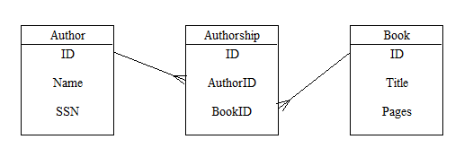

When constructing a Domain Model for your application, you will want to distinguish between objects that will be persisted and objects that will not. By registering a subclass of dejavu.Unit, you allow instances of that subclass to be persisted.
Before you can register your Unit class, you must create it:
import dejavu class Printer(dejavu.Unit): passThis is all you need for a fully-functioning Unit class. There are no methods or attributes that you are required to override; simply subclass from Unit. However, this is a fairly uninteresting class. It automatically has an ID property, but doesn't provide any functionality other than what Unit already provides. The first thing we will probably want to add to our new class is persistent data.
Once you have defined a persistent class (by subclassing Unit), you need to make another decision. Rather than persist the entire object __dict__, you specify a subset of persistent attributes by using UnitProperty, a data descriptor. If you've used Python's builtin property() construct, you've used descriptors before.
We might enhance our Printer example thusly:
from dejavu import Unit, UnitProperty
class Printer(Unit):
Manufacturer = UnitProperty(unicode)
ColorCopies = UnitProperty(bool)
PPM = UnitProperty(float)
This adds three persistent attributes to our Printer objects,
each with a different datatype. In addition, every subclass of Unit
inherits an 'ID' property, an int.
When you get and set UnitProperty attributes, they behave just like any other attributes:
>>> p = Printer() >>> p.PPM = 25 >>> p.PPM 25.0However, you will notice right away that the int value we provided has been coerced to a float behind the scenes. This is because we specified the PPM attribute as a 'float' type when we created it. The value of a Unit Property is restricted to the type which you specify. The only other valid value for a Unit Property is None; any Property may be None at any time, and in fact, all Properties are None until you assign values to them:
>>> p.ColorCopies is None True
Dejavu is extensible, and in official specification/API terms, any Python type is allowed as a UnitProperty.type. The standard distribution tends to provide full support for:
If you use datetime.datetime for the type of a UnitProperty, most StorageManagers will throw away the microseconds. This is an unfortunate oversight that should be corrected sometime in the future.
All Units possess an identifiers attribute, a tuple of their UnitProperty names which define the uniqueness of a Unit. The Unit base class possesses a single Unit Property, an int named 'ID', and its identifiers attribute is therefore ('ID',). That's a string in the tuple; older versions of Dejavu used a reference to the actual UnitProperty class instead. If you wish to use identifiers of a different number, types, or names, simply replace the identifiers attribute in your subclass:
class Printer(Unit):
# Set ID to None to remove the ID property from this subclass.
ID = None
Model = UnitProperty(unicode)
UnitNumber = UnitProperty(int)
identifiers = ('Model', 'UnitNumber')
Every Unit should possess at least one identifier. This ensures that each Unit within the system is unique. You should consider any UnitProperty which is one of the identifiers to be read-only after a Unit has been memorized. Extremely rare applications (like write-only log tables) are allowed to use en empty identifiers tuple, but in most OLTP/OLAP scenarios, all your Units should have at least one identifier property.
In addition to defining Unit Properties within your class body, you can define them after the class body has been executed via the classmethod Unit.set_property(). For example, the following two classes are equivalent:
class Book(Unit):
Content = UnitProperty(unicode)
class Book(Unit): pass
Book.set_property('Content', unicode)
Declarations outside of the class body allow more dynamic setting of
Unit properties. You can define multiple properties at once via
the Unit.set_properties() classmethod:
class Book(Unit): pass
Book.set_properties({'Content': unicode,
'Publisher': unicode,
'Year': int,
})
You also have options when populating Unit Properties. The standard way is simply to reference them as normal Python instance attributes. However, you may also use the adjust() method to modify multiple properties at once; pass in keyword arguments which match the properties you wish to modify. Keyword arguments also work when instantiating the object. For example, the following three code snippets are equivalent:
pub = Book() pub.Publisher = 'Walter J. Black' pub.Year = 1928 pub = Book() pub.adjust(Publisher='Walter J. Black', Year=1928) pub = Book(Publisher='Walter J. Black', Year=1928)
Like many descriptors, Unit Properties behave differently when you access them from the class, rather than from an instance as above. When calling them from the class, you receive the UnitProperty object itself, rather than its value for a given instance. That is,
>>> c = Printer.ColorCopies >>> c <dejavu.UnitProperty object at 0x01112970>This is significant, because it allows us to store metadata about the property itself:
>>> c.type, c.index, c.hints, c.key
(<type 'bool'>, False, {}, 'ColorCopies')
When you define a UnitProperty instance, you can pass in these extra
attributes. Its signature is UnitProperty(type=unicode,
index=False, hints={}, key=None, default=None). Supply any, all,
or none of them as
needed. The key attribute is merely the property's canonical name,
and is usually set for you. The index value tells database Storage
Managers whether or not to index the column (if they do any indexing). The
type attribute limits property values to instances of that type
(or None). Finally, the hints dictionary provides hints
to Storage Managers to help optimize storage. If you write a custom Storage
Manager, you may define and use your own hints. Here are the ones that most
builtin SM's understand:
| Key | Values | Description |
|---|---|---|
| bytes | b >= 0 | Inform SMs that a particular property will never exceed b bytes. This applies to long and int properties, as well as str and unicode. A value of 0 implies no limit. If not specified, a default maximum will be used. Many database backends default to 255; non-database backends often have no limit. Check your Storage Manager. |
| scale | s >= 0 | Scale is the number of digits to the right of the decimal point in a NUMERIC (fixedpoint or decimal) field. This hint informs SMs that would usually store such data at a default scale (usually 2), that the property should use a different scale. |
| precision | p >= 0 | Precision is the total number of decimal digits in a NUMERIC (fixedpoint or decimal) field, or the total number of binary digits in a float field. This hint informs SMs that the property will never exceed p digits. If missing, the StorageManager will supply a default maximum precision. For example, PostgreSQL can handle 1000 decimal digits. If explicitly set to 0 (zero), the StorageManager will allow unlimited precision, if possible. Note that the fixedpoint module uses the word "precision" where we use the word "scale"; it actually has unlimited precision (as we use the word). The decimal module, in contrast, uses limited precision but no scale. |
Triggers are behaviors which fire when the value of a Unit Property is changed. You can override a UnitProperty's __set__ method to achieve this in Dejavu. For example:
class DatedProperty(UnitProperty):
def __set__(self, unit, value):
UnitProperty.__set__(self, unit, value)
unit.Date = datetime.date.today()
parent = unit.Forum()
if parent:
parent.Date = unit.Date
class Topic(Unit):
Date = UnitProperty(datetime.date)
Content = DatedProperty()
ForumID = UnitProperty(int)
class Forum(Unit):
Date = UnitProperty(datetime.date)
Topic.many_to_one('ForumID', Forum, 'ID')
In this example, whenever topic.Content is set, the __set__
method will be called and the object's Date attribute will
be modified. Then, the Topic's parent Forum is looked up and its
Date is modified.
As with any trigger system, you need to be careful not to have triggers called out of order. For example, if a user changes both the ForumID and Content properties in a single operation (like a web page submit), the old Forum will be incorrectly modified if the Content property is applied first. I don't have any cool tools built into Dejavu to help you with this, but I'm open to suggestions.
There is also a TriggerProperty class, which overrides __set__ for you. If the value in question changes (and the unit has a sandbox), then the on_set(unit, oldvalue) method will be called. Override it in your subclass like this:
class NoteContentProperty(TriggerProperty):
def on_set(self, unit, oldvalue):
unit.LastModified = datetime.date.today()
Note that, if you need to know what the new value is, it's
already been set on the unit.
In addition to defining your Unit class, you must also register that class with your application's StorageManager. Each class which you want Dejavu to manage must be passed to store.register(cls). If you create a module with multiple classes, you can register them all at once with store.register_all(globals()). It will grab any Unit subclasses out of your module's globals() (or any other mapping you pass to register_all) and register them. It then returns a list of the classes it found.
The register and register_all methods also register any Associations you have defined between Units.
If you're using multiple StorageManagers in a network, you must register classes for each of them. You can inspect which classes have been registered to a given store via store.classes, a set. You shouldn't manipulate this structure on your own; use register or register_all instead.
Each StorageManager object also manages the associations between Unit classes in its associations attribute, which is a simple, unweighted, undirected graph. Whenever you register a Unit class, the SM will add its associations to this graph. The only other common operation is to call associations.shortest_path(start, end), to retrieve the chain of associations between two Unit classes.
Any database code in a general-purpose programming language will eventually have to come to terms with the gap between native code types and native storage types. In most cases for us, this means matching Python types (like int and datetime) to database types (like INT8 and TEXT). Dejavu provides this layer for databases by using a mapping layer between your model code (Unit classes) and the underlying tables and columns. The implementation of that is unimportant (and possibly storage-dependent), but Dejavu needs to know the database types in effect in order to translate data safely.
When you start your application, you need to call store.map_all(conflicts='error') after you have registered all of your Unit classes (but before you attempt to execute commands on them).
If your application has created all of its own tables using Dejavu, then there is generally nothing to worry about in terms of the "type gap"; Dejavu will default to creating columns of the types it knows best, and you may be able to set the store's auto_discover attribute to False and reduce application start-up time (Dejavu will use a mock mapping layer in this case, based on your model). But if you are building a Dejavu interface onto an existing database, or if you customize/optimize your database by hand, then you should leave it set to True (the default) for safety's sake.
Once you've put together some Unit classes, chances are you're going to want to associate them. Generally, this is accomplished by creating a property in the Unit_B class which stores IDs of Unit_A objects (which might be called foreign keys in a database context).
class Archaeologist(Unit):
Height = UnitProperty(float)
class Biography(Unit):
ArchID = UnitProperty(int)
PubDate = UnitProperty(datetime.date)
In this example, each Biography object will have an ArchID
attribute, which will equal the ID of some Archaeologist.
In Dejavu terms, we say that there is a near class (with a near
key) and a far class (with a far key). Associations in
Dejavu are not one-way, so it doesn't matter which class you choose for the
"near" one and which for the "far" one.
You could stop at this point in your design, and simply remember what these keys are and how they relate, and manipulate them accordingly. But Dejavu allows you to explicitly declare these associations:
Archaeologist.one_to_many('ID', Biography, 'ArchID')
You pass in the the near key, the far class, and the far key.
There are similar methods for one_to_one and many_to_one. In addition,
there is a Unit.associate method which allows you to use your own
relationship objects.
What does an explicit association buy for you? First, you can join Units without having to remember which keys are related. Second, StorageManagers discover associations and fill the store.associations registry, so that smart consumer code (like Unit Engine Rules) can automatically follow association paths for you. Third, each Unit class has a private _associations attribute, a dict. Each Unit involved in in the association gains an entry in that dict: the key is the far class name, and the value is a UnitAssociation instance, a non-data (method) descriptor, with additional nearClass, nearKey, farClass, farKey, and to_many attributes.
Once two classes have been associated, you attach Unit instances to each other by equating their associated properties. That was a mouthful. Here's an example:
>>> evbio = Biography() >>> evbio.ArchID = Eversley.IDThe two unit instances (evbio and Eversley) are now associated (only their classes were before). Keep in mind that many Unit instances need to be memorized in order to obtain an ID.
Rather than forcing you to remember all of the related classes and keys, Dejavu Units all have an add method, which does the same thing:
>>> evbio = Biography() >>> evbio.add(Eversley)The add method works in either direction, so you could just as well write:
>>> evbio = Biography() >>> Eversley.add(evbio)The add method will take any number of unit instances as arguments, and add each one in turn. That is:
>>> evbio1 = Biography() >>> evbio2 = Biography() >>> evbio3 = Biography() >>> Eversley.add(evbio1, evbio2, evbio3)
To make querying easier, each of the two Unit classes involved in an association will gain a new "related units" method which simplifies looking up related instances of the other class. The new method for Unit_B will have the name of Unit_A, and vice-versa. In our example:
>>> Archaeologist.Biography <unbound method Archaeologist.related_units> >>> Eversley = Archaeologist(Height=6.417) >>> Eversley.Biography <bound method Archaeologist.related_units of <__main__.Archaeologist object at 0x011A1930>> >>> bios = Eversley.Biography() >>> bios [<arch.Biography object at 0x01158E10>, <arch.Biography object at 0x0118B350>, <arch.Biography object at 0x0118B170>] >>> evbio1.Archaeologist() <__main__.Archaeologist object at 0x011A1930>We've only created three Biographies at this point, so we can print the list easily. At the other extreme (when you have hundreds of Biographies to filter), you can pass an optional Expression object or keyword arguments to the "related units" method, just like you can with recall. When you do, the list of associated Units will be filtered accordingly.
Notice that, because our relationship is one-to-many, the two "related units" methods behave differently. The "one" (Archaeologist) which is retrieving the "many" (Biography) retrieves a list. The "many" retrieving the "one" retrieves a single Unit. When retrieving "to-one", the result will always be a single Unit (or None if there is no matching Unit). When retrieving "to-many", the result will always be a list, (it will be empty if there are no matches).
Because the "related units" method names are formed automatically, you need to take care not to use the names of Unit classes for your Unit properties. In our example, we used "ArchID" for the name of our "foreign key". If we had used "Archaeologist" instead, we would have had problems; when we associated the classes, the property named "Archaeologist" would have collided with the "related units" method named "Archaeologist". Be careful when naming your properties, and plan for the future. The best approach is probably to end your property name with "ID" every time.
Unlike some other ORM's, Dejavu doesn't cache far Units within the near Unit. Each time you call the "related units" method, the data is recalled from your Sandbox. It is quite probable that those far Units are still sitting in memory in the Sandbox, but they're not going to persist in the near Unit itself in any way.
Finally, some of you may want to override the default "related units" methods. Feel free; Unit.associate takes two optional arguments, which should be subclasses of the UnitAssociation descriptor. See the source code for more information.
Sometimes you need an association between two classes that is more complicated. For example, you might have an Archaeologist object and want to retrieve just their last Biography. Here's an example of how to do this:
class LastBiographyAssociation(dejavu.UnitAssociation):
"""Unit Association to relate an Archaeologist to their last Biography."""
to_many = False
register = False
def related(self, unit, expr=None, **kwargs):
bios = unit.Biography(expr, order=["PubDate DESC"], **kwargs)
try:
return bios.next()
except StopIteration:
return None
descriptor = LastBiographyAssociation(u'ID', Biography, u'ID')
descriptor.nearClass = Archaeologist
Archaeologist._associations["Last Biography"] = descriptor
There are a couple of things to note, here. We are basically doing by
hand what the associate method does for you automatically, but
that method makes two associations (one in each direction), and
we're only making one. The related(unit, expr, **kw)
method is overridden to do the actual lookup of far units. Because the
to_many attribute is False, related returns a single
Unit, or None. Finally, the register attribute, when False,
keeps the store from registering this association in its graph
(see Registration, above).
Sometimes you need an association between two classes (or even the same class) where "many" relate to "many". For example, an Author might have pulished many books, which might each possess multiple authors. There are several techniques to implement this; here we provide the simplest one and leave the rest as an exercise (in Internet search) for the reader.
Lots of relational stores like databases and so on do not provide mechanisms for many-to-many relationships; they only provide one-to-many (or many-to-one, which is the same thing). The easiest way to do many-to-many is to add an intermediate table to contain the association itself. In our example, we might add a new Unit class to model the 'authorship' association:
class Authorship(Unit):
AuthorID = UnitProperty(int)
BookID = UnitProperty(int)
Author.one_to_many('ID', Authorship, 'AuthorID')
Book.one_to_many('ID', Authorship, 'BookID')

A query for the titles of all books written by Sholem Aleichem might look like this:
>>> author = box.unit(Author, Name='Sholem Aleichem')
>>> list(box.view((Authorship << Book, [[], ['Title']],
lambda a, b: a.AuthorID == author.ID)))
[u"Yossele Solovey", u"Tevye's Daughters", u"Mottel the Cantor's son"]
Dejavu helps you make a model (in Python code) that matches some reality (like an RDBMS, file, or cache) elsewhere. Because both the model and reality can change independently, you'll find conflicts between them from time to time. The most common occurrence of such conflicts is during a call to map_all, since it tries to match up your entire model to reality. Similar conflicts arise whenever you ask Dejavu to make changes to reality: add an index, drop storage, or rename a property.
When conflicts may occur, Dejavu adds a conflicts argument to the method arguments. The value you supply for this argument tells Dejavu what to do if a conflict arises:
Since this procedure typically happens once per deployed application, Dejavu doesn't try to over-engineer it. But the deployer will still have to go through an installation step at some point. Dejavu offers minimal library calls on top of which you can then build installation tools (and upgrade, and uninstall tools).
For example, a simple install process could look like this:
elif cmd == "install":
store.log = getlogger(os.path.join(os.getcwd(), localDir, "install.log"))
store.logflags = logflags.ERROR + logflags.SQL + logflags.SANDBOX
print "Creating databases...",
store.create_database()
print "ok"
print "Creating tables...",
store.map_all(conflicts='repair')
print "ok"
sys.exit(0)
In addition to create_database(conflicts='error'), all Storage Managers also have drop_database(conflicts='error') and has_database() methods.
The StorageManager class has some methods to help you make changes to keep storage structures in sync with changes to your Unit classes. For example, let's say that we deploy our Archaeology-Biography application at various libraries around the world. After a year, one of the developers wishes to implement a new reporting feature; however, it would be easiest to build if the Unit Property names could be exposed to the users. Unfortunately, our "ArchID" property on the Biography class isn't very informative. It would be better if we could rename that to "ArchaeologistID":
store.rename_property(Biography, "ArchID", "ArchaeologistID")
Assuming we've already made the change to our model, the above example renames the property in the persistence layer (the database) using the rename_property(cls, oldname, newname, conflicts='error') method. Additional StorageManager methods:
Unit classes (tables):
Unit properties (columns):
Unit property (column) indices:
The Schema class helps you manage changes to your Dejavu model throughout its lifetime. Taking our rename_property example from above, we can rewrite it in a Schema obejcts like this:
class ArchBioSchema(dejavu.Schema):
guid = 'da39a3ee5e6b4b0d3255bfef95601890afd80709'
latest = 2
def upgrade_to_2(self):
self.store.rename_property(Biography, "ArchID", "ArchaeologistID")
abs = ArchBioSchema(store)
abs.upgrade()
The example declares this change to be "version 2" of our schema. If you examine the base Schema class, you will see that it already has an upgrade_to_0 method. The "zeroth" upgrade makes no schema changes; it merely marks all deployed databases with "version 0". I skipped version 1 in the example, just in case I need some setup code in the future ;).
If you call schema.upgrade(version) with a version argument, then your deployment will be upgraded to that version. If no argument is given, the installation will be upgraded to schema.latest. You can even skip steps (i.e. remove methods for broken steps) if it comes to that.
Each Schema also has a stage attribute. While an upgrade is in process, this value will be an int, the same number as that of the upgrade method. That is, while upgrade_to_2 is running, stage will be 2. If no upgrade method is running, stage will be None.
After you run upgrade, you can call the assert_storage method of the Schema object to tell Dejavu to create storage (tables in your database) for all the Unit classes registered in your store. If storage already exists for a given class, it is skipped.
Please note: the installed version defaults to "latest". This allows new installs to skip all the upgrade steps, and just use the latest class definitions when they call assert_storage. However, it means that if you deploy your apps for a while without a Schema, and then introduce one later, you must manually decrement DeployedVersion from "latest" to the actual deployed version *before* running your app for the first time (or things will break due to the difference between the latest and deployed schema).
The Schema class uses a magic table in the database to keep track of each deployment's schema version. The Unit class is called "DeployedVersion", and it has ID and Version attributes.
The ID attribute will be set to whatever your Schema.guid is. It's a simple way to isolate multiple installed Dejavu applications. A given application should use the same guid throughout its lifetime. I used sha.new().hexdigest() to generate the example. Feel free to use sha.new, a guid generator, a descriptive name, or whatever you like.
When you create your first Dejavu model, you might be forming it to match some existing database schema. If so, Dejavu has a Modeler tool to help you inside dejavu.storage.db.
The make_class(tablename, newclassname=None) method finds an existing Table by name and returns a subclass of Unit which models that table. By default, the new class will have the same name as the database table; supply the 'newclassname' argument to use a different name (for example, to capitalize the class name).
>>> from dejavu import storage
>>> from dejavu.storage import db
>>> sm = storage.resolve('mysql',
{"host": "localhost", "db": "existing_db",
"user": "root", "passwd": "xxxx",
})
>>> modeler = db.Modeler(sm.schema)
>>> Zoo = modeler.make_class("zoo", "Zoo")
>>> Zoo
<class 'dejavu.storage.db.Zoo'>
>>> Zoo.properties
['id', 'name', 'admission', 'founded', 'lastescape', 'opens']
The make_source(tablename, newclassname=None) method does the same thing as make_class, but returns a string that contains valid Python code to generate the requested Unit class:
>>> print modeler.make_source("exhibit", "Exhibit")
class Exhibit(Unit):
pettingallowed = UnitProperty(bool)
animals = UnitProperty(str)
name = UnitProperty(str)
zooid = UnitProperty(int)
acreage = UnitProperty(decimal.Decimal)
creators = UnitProperty(str)
# Remove the default 'ID' property.
ID = None
identifiers = ('name', 'zooid')
sequencer = UnitSequencer()
Finally, you can perform this sort of modeling on all tables in a database at once with the all_classes() and all_source() methods of the Modeler. These simply iterate over all of the known tables and return the results in a list instead of a single value.